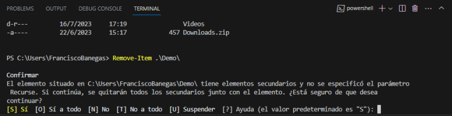
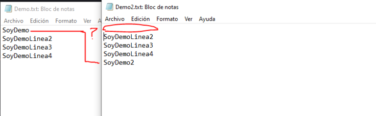
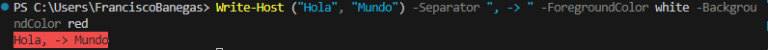
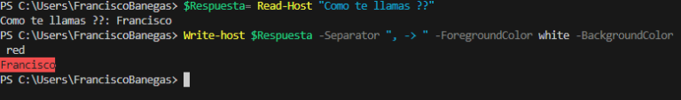
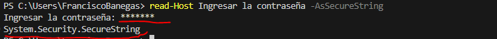
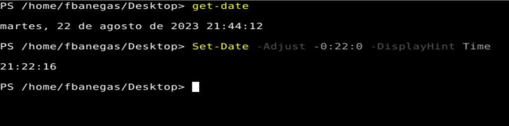

Powershell
Guia Basica para nuevos usuarios
Introducción
- Autor : Francisco Banegas
- Contacto : Discord
- Youtube : FranciscoBanegas
Esta guía fue diseñada para introducir a los usuarios en el poderoso y versátil shell de línea de comandos y lenguaje de scripting desarrollado por
Microsoft.
PowerShell es esencial para administrar y automatizar tareas en entornos Windows, permitiendo a los usuarios interactuar con el sistema operativo y otras aplicaciones de manera eficiente.
Prerequisitos
Antes de comenzar a aprender PowerShell, es útil que el usuario tenga algunos conocimientos y herramientas básicas. Aquí hay una lista de requisitos previos recomendados:
- Conocimientos Básicos de Windows
- Un editor de codigo (ej: Visual Studio Code)
- Linea de comandos Traditional (CMD)
- Conceptos basico de Scripting
Si hay algún error ortográfico o explicación mal escrita, por favor Contactanos.
Configuración de entorno
Antes de comenzar a configurar nuestro entorno de desarrollo, es importante verificar su version de PowerShell. Para ello utilizaremos el comando Get-Host o bien utilizar la variable $PSVersionTable.
Resultado
Name : ConsoleHost
Version : 5.1.19041.3803
InstanceId : a99043e9-42b7-4fb1-9698-b4ad1f094170
UI : System.Management.Automation.Internal.Host.InternalHostUserInterface
CurrentCulture : es-AR
CurrentUICulture : es-ES
PrivateData : Microsoft.PowerShell.ConsoleHost+ConsoleColorProxy
DebuggerEnabled : True
IsRunspacePushed : False
Runspace : System.Management.Automation.Runspaces.LocalRunspace
La versión actual de PowerShell es 5.1 y partiremos desde esta version.
Para evitar problemas recomendamos utilizar la version 5.1 o superior.
Instalar ultima version
Para Instalar PowerShell en su ultima version es necesario ingresar en nuestra terminal el siguiente comando:
iex "& { $(irm https://aka.ms/install-powershell.ps1) } -UseMSI"
Tambien puede descargar directame el executable desde PowerShell Releases
Que herramientas de PowerShell estan disponibles para scripting
Esta es una lista de algunas de las herramientas de PowerShell que estan disponibles para scripting.
- PowerShell
- Windows PowerShell ISE
- Visual Studio Code
- PowerShell Studio
- Sublime Text
- ISESteroids
Por razones ovideas, no utilizaremos la terminal de PowerShell para escribir los scripts.
En esta guia utilizaremos el editor de texto (Visual Studio Code). pero podemos utilizar cualquieras de la ya mencionada,
Tambien debo resaltar que ISESteroids no es un editor si no una vitamina. para Windows PowerShell ISE.
Windows Powershell ISE es un IDE no es un editor.
Un IDE es una herramienta para escribir, editar, depurar y ejecutar tu código en tiempo real.
Habilitar Execution de Scripting
Para habilitar Execution de Scripting en PowerShell es necesario ejecutar el siguiente comando.
Set-ExecutionPolicy -ExecutionPolicy Unrestricted
CMDLets/Verbos/Get-Help
Que son los CMDLets
Los Cmdlets son comandos únicamente funcionales bajo Powershell y en .NET. Esto es debido a que PowerShell accede objectos de clase .NET de manera nativa en nuestro sistema. Implica que todo funciona en le mismo ecosistema a diferencia de su predecesor (CMD).
Saber másPrincipales diferencias a su predecesor
- Los cmdlets son objetos de clase de .NET Framework:
- En PowerShell, los cmdlets son pequeños bloques de codigo que realizan tareas específicas. La ventaja de que sean objetos de clase de .NET Framework es que pueden aprovechar la amplia funcionalidad proporcionada por la biblioteca de clases .NET. Esto permite una integración más profunda con el sistema operativo y otras aplicaciones basadas en .NET.
- No son ejecutables independientes:
- PowerShell no solo es un shell de línea de comandos, sino también un entorno de scripting. Los cmdlets no son archivos ejecutables independientes; en su lugar, son funciones y comandos que se pueden utilizar dentro del entorno de PowerShell. Esto facilita la creación de scripts y la automatización de tareas.
- Los objetos se pueden pasar como salida para la canalización:
- Una de las características poderosas de PowerShell es su capacidad para usar objetos en lugar de solo texto en la canalización. Esto significa que los resultados de un cmdlet son objetos que pueden ser pasados directamente a otros cmdlets sin necesidad de conversiones complicadas. Facilita el procesamiento y la manipulación de datos.
- Te permite crear interfaces a partir de Windows Forms:
- PowerShell tiene la capacidad de crear interfaces gráficas de usuario utilizando Windows Forms. Esto permite a los usuarios diseñar formularios interactivos y aplicaciones GUI utilizando PowerShell, lo que facilita la creación de herramientas personalizadas y la automatización de procesos más complejos.
- El proceso de ejecución no está en una secuencia de texto estática sino que hace objetos dinámicos:
- PowerShell opera con objetos dinámicos en lugar de simplemente procesar texto estático. Esto significa que puedes trabajar con objetos y propiedades directamente, lo que simplifica la manipulación de datos y la realización de tareas complejas. El enfoque orientado a objetos de PowerShell lo hace más flexible y potente en comparación con los shells que operan principalmente con texto plano.
En conjunto, estas características hacen de PowerShell una herramienta potente y versátil para la administración y automatización de tareas en entornos Windows.
Verbos
Los comandos en PowerShell iniciar con un Verbos seguido de un Sustantivo. Los Verbos en PowerShell lo permiten saber que acción va a realizar dicho comando antes de ejecutarlo. En cambio un sustantivo es una palabra que sirve para nombrar cosas materiales o elementos inmateriales.
Hay mucho verbos que indica en PowerShell que acción va a realizar al momento de escribirlo, aquí le dejo una lista de los mas comunes.
Lista de Verbos mas utilizados
Get- ConseguirSet- EstablecerRemove- EliminarEnable- HabilitarDisable- DeshabilitarStart- IniciarAdd- AgregarWrite- EscribirNew- NuevoStop- DetenerClear- LimpiarUpdate- ActualizarReset- ReiniciarTest- Probar
Si desea Profundizar le adjunto la documentación oficial en donde habla muchos mas al respecto de los verbos.
Verbos aprobados para los comandos de PowerShell Saber más
Get-Help
El cmdlet Get-Help en PowerShell se utiliza para obtener información detallada sobre los cmdlets, funciones, scripts, módulos, y otros elementos de PowerShell. Proporciona documentación en línea que puede ayudarte a comprender cómo usar y aprovechar las distintas funcionalidades de PowerShell. Aquí tienes una explicación básica junto con un ejemplo de uso:
Sintaxis básica:
Get-Help [-Name] cmdletName [-Detailed] [-Examples] [-Full] [-Online]
Parametros
- -Name: específicas el nombre del cmdlet.
- -Detailed: Muestra detalles adicionales.
- -Examples: Muestra ejemplos de uso.
- -Full: Muestra la documentación completa.
- -Online: Muestra la documentación en línea.
Archivos y carpetas
Ver, Crear, Copiar ,Eliminación , Mover, Renombrar, Comprobar, Obtener Información en archivos y carpetas en PowerShell.
Ver directorio
Get-ChildItem lo permitirá obtener los elementos actuales y sub elementos.
Obtener-Directorio -Path C:\Demo
----------------------------------
Get-ChildItem -Path C:\Demo
Salida
Directorio: C:\Demo
Mode LastWriteTime Length Name
---- ------------- ------ ----
d----- 2/15/2023 05:29 Demo2
-a---- 2/13/2023 05:55 8014 Demo.txt
-ah---- 2/1/2023 08:43 183 Demo.ps1
-ar--- 2/12/2023 14:31 27 SoloLectura.txt
En la salida obtendremos el nombre ,fecha ,Longitud (de los archivos) y Modo.
Voy a hacer énfasis en la salida Mode (Modo). Dicha salida lo esta indicando si se trata de un directorio o archivo y en que estado esta ejemplo si esta oculto, solo lectura ,etc.
| Modo | Definición |
|---|---|
| D | Directorio |
| A | Archivo |
| R | Solo lectura |
| l | Enlace |
| H | Oculto |
| S | Sistema |
Desplazarlo en el directorio
Set-Location lo permite moverlos libremente como lo hacíamos en su predecesor.
| Comando | Definición |
|---|---|
| Set-Location Nombredeldirectorio | Lo permite moverlos al directorio especificado |
| Set-Location .. | Los dos puntos indica que retrocedamos un directorio |
| Set-Location / | Retrocedamos a la raiz del directorio |
| Set-Location .\ | Del directorio actual desplázate hacia el directorio especificado |
Set-Location "\Users\Username\"
Si vienes de CMD o de BASH puedes utilizar los alias CD o LS.
Creación de carpeta y archivos
El cmdlets New-Item se usa para crear un elementos (directorio o archivo).
Directorio
Nuevo-Elemento -RutaDondeSeCrearaElElemento 'Ruta\Nombredeldirectorio' -TipodeElemento Directorio
---------------------------------------------------------------------------------------------------------
New-Item -Path 'C:\Demo' -ItemType Directory
Archivo
Nuevo-Elemento -RutaDondeSeCrearaElElemento 'Ruta\Nombredelarchivo.extension' -TipodeElemento Archivo
---------------------------------------------------------------------------------------------------------
New-Item -Path 'C:\Users\Username\Desktop\demo.txt' -ItemType File
También podemos decirle que cree un directorio o archivo en el directorio actual remplazando la ruta por un simple punto(.).
Nuevo-Elemento -RutaDondeSeCrearaElElemento 'Punto\Nombredelarchivo.extension' -TipodeElemento Archivo
---------------------------------------------------------------------------------------------------------
New-Item -Path ./demo.txt -Type File
Podemos forzar su ejecución para que sobrescriba por el elemento actual utilizando –Force si dicho elemnto ya existe.
Nuevo-Elemento -RutaDondeSeCrearaElElemento 'Punto\Nombredelarchivo.extension' -TipodeElemento Archivo -forzar
--------------------------------------------------------------------------------------------------------------
New-Item -Path ./demo.txt -Type File -Force
Copiar Carpetas y Archivos
Para copiar directorio o archivo deberemos utilizar Copy-Item.
Directorio
Copiar-Elemento "Ruta->NombreDeldirectorioACopiar" -Destino "Ruta -> Destino"
---------------------------------------------------------------------------------
Copy-Item .\Demo\ -Destination C:\
Como podemos observar podemos utilizar el atajo del punto (.) que vimos anteriormente.
Si queremos copiar todos sub directorios, deberemos especificarle el atributo –Recurse.
Copiar-Elemento "Ruta->NombreDeldirectorioACopiar" -Destino "Ruta -> Directorio" -recursivo
------------------------------------------------------------------------------------
Copy-Item .\Demo\* -Destination C:\ -recurse
Si deseamo copiar todo el Contenido a nivel raiz del directorio de destino, podemos utilizar el atajo de asterisco (*)
Copy-Item .\Demo\* -Destination C:\ -recurse

Archivo
Copiar-Elemento "Ruta->NombreDelArchivoACopiar" -Destino "Ruta -> Destino"
---------------------------------------------------------------------------------
Copy-Item .\demo.txt -Destination C:\
También podemos decirle que cambie el nombre o extensión de un archivo solamente modificando la ruta destino.
Copy-Item ".\demo.txt" -Destination "demo.ps1"
Eliminar carpetas y archivos
Hay otras forma de eliminar archivo y directorio, pero sin duda alguna Remove-Item es la mas comun.
Directorio
Eliminar-Elemento .\NombreDelDirectorioOArchivoaEliminar\
----------------------------------------------------------------------
Remove-Item .\Demo\
A igual que como ocurría anteriormente con Copy-Item, necesitamos añadirle el atributo -Recurse para elimine todos los subdirectorios y archivos existente.
Eliminar-Elemento .\NombreDelDirectorioOArchivoaEliminar\ -Recursivo
----------------------------------------------------------------------
Remove-Item .\Demo\ -Recurse
Sino especificamos el atributo PowerShell lo pedirá una confirmación .
Archivo
Eliminar-Elemento C:\Test\NombredelArchivo.NombredelElarchivo(.txt,etc)
------------------------------------------------------------------
Remove-Item C:\Test\*.*
El asterisco (*) esta representado los nombre de los archivos y luego seguido del (.) el segundo asterisco (*) Esta remplazando las extensiones.
Eliminar-Elemento DirectorioActual -Incluir *.doc -Excluir*1*
----------------------------------------------------------------
Remove-Item * -Include *.doc -Exclude *1*
Aquí otro ejemplo practico donde le indicamos que elimine todo los ficheros con la extensión .doc y excluya todos lo que tenga el numero 1 del directorio actua
Eliminar-Elemento -Path C:\ArchivoOculto.txt -Fuerza
----------------------------------------------------------------
Remove-Item -Path C:\ArchivoOculto.txt -Force
Si deseamos forzar la eliminación de un archivo o directorio oculto, podemos utilizar el atributo –Force
Renombrar y Mover Directorio \ Archivo
Mover
Move-Item lo permitirá mover tanto ficheros como directorios le hallamos especificado.
Mover-Elemento -ruta .\Carpeta\ -Destino .\Carpeta2\
-----------------------------------------------------------------------
Move-Item -Path .\Demo\ -Destination .\Demo2\
Podemos indicarle que mueva todos los archivos especificado.
Mover-Elemento -ruta .\Carpeta\Archivo.extension -Destino .\Carpeta2\
-----------------------------------------------------------------------
Move-Item -Path .\Demo\*.txt -Destination C:\Demo2\
Renombrar
Rename-Item Lo permite cambiar nombre de elementos.
Renombrar-Item -ruta "c:\Nombre.extension " -NuevoNombre "NuevoNombre.extension "
----------------------------------------------------------------------------------
Rename-Item -Path "c:\demo.txt" -NewName "SoylaMejorDemo.txt"
Comprobar
Test-Path Lo permite comprobar si un elemento existe.
comprobar-Camino -Ruta "Ruta"
--------------------------------------------------------
Test-Path -Path "C:\Demo"
Salida
PS C:> Test-Path .\Demo\
True
------------------------------------------
PS C:> Test-Path .\Demo2\
False
Test-Path devolverá True si el archivo o directorio existe y False si no existe.
Test-Path "HKLM:\Software\Microsoft\PowerShell\1\ShellIds\Microsoft.PowerShell"
Verificamos si existe la clave de registro.
Get-content
Get-Content lo permite obtener el contenido de un archivo.
Obtener-contenido c:nombredelarchivo.extension
------------------------------------------------
Get-Content c:\demo.txt
Salida
PS C:\Users\FranciscoBanegas> Get-Content c:\demo.txt
Soy la 1 linea
Soy la 2 linea
Soy la 3 linea
Soy la 4 linea
Cmdlets útiles
Hablaremos de algunos de los Cmdlets útiles y veremos como funciona.
Sort-Object
Controlar el orden de salida de forma ascendente o descendente.
$variable -> Valor Almacenado
---------------------------------
$Demo = "A","B","C","D"
Una variable se declara con el signo $ seguido del nombre de la variable, y se encarga de almacenar valores tales como números, cadenas (Texto), booleanos (Verdadero y Falso).
Para este ejemplo e creado una variable de nombre Demo que almacena letras en orden
alfabética, para lograr mostrar el funcionamiento de la instrucción Sort-Object.
Si llamamos a la variable Demo obtendremos una salida en forma ordenada de la letra A -> D.
Salida
A
B
C
D
Como haríamos si queremos que la salida comienzo de la letra D -> A, sin modificar el orden de la variable. Una de la forma de hacerlo es con Sort-Object.
Salida
D
C
B
A
En este ejemplo manipulamos la salida utilizando Sort-object y el atributo –Descending (Descendente).
Get-ChildItem C:\Users\FranciscoBanegas | sort -Descending
Salida
Directorio: C:\Users\FranciscoBanegas
Mode LastWriteTime Length Name
---- ------------- ------ ----
d-r--- 16/7/2023 17:19 Videos
d-r--- 22/6/2023 13:35 Searches
d-r--- 22/6/2023 13:34 Saved Games
d-r--- 7/7/2023 16:05 Pictures
d-r--- 22/6/2023 13:34 Music
d-r--- 22/6/2023 13:34 Links
d-r--- 22/6/2023 13:34 Favorites
d-r--- 27/7/2023 22:35 Documents
d-r--- 16/8/2023 01:12 Desktop
d----- 13/8/2023 17:20 Demo2
d-r--- 22/6/2023 13:34 Contacts
d-r--- 22/6/2023 13:34 3D Objects
d----- 24/6/2023 19:58 .vscode
d----- 14/8/2023 18:18 .VirtualBox
d----- 12/7/2023 12:36 .bito
Como vemos en el segundo ejemplo también podemos combinarlo con otros comandos como Get-Chilidtem utilizando Pipe (|) y emplear el uso de Alias.
No te preocupe si no tiene idea de que es pipe y un alias, aquí te va una introducción rápida. Un operador de Canalización (Pipelines) es una forma de unir varios comando , un alias hacer referencia a un método corto para llamar al comando. Sencillo no te parece ??.
Get-Alias
Este comando nos permite mostrar los alias de los comandos. La sintaxis es Get-Alias.
Salida
CommandType Name Version Source ----------- ---- ------- ------ Alias % -> ForEach-Object Alias ? -> Where-Object Alias ac -> Add-Content Alias asnp -> Add-PSSnapin Alias cat -> Get-Content Alias cd -> Set-Location Alias CFS -> ConvertFrom-String 3.1.0.0 Alias chdir -> Set-Location Alias clc -> Clear-Content Alias clear -> Clear-Host Alias clhy -> Clear-History Alias cli -> Clear-Item Alias clp -> Clear-ItemProperty Alias cls -> Clear-Host Alias clv -> Clear-Variable Alias cnsn -> Connect-PSSession Alias compare -> Compare-Object Alias copy -> Copy-Item Alias cp -> Copy-Item Alias cpi -> Copy-Item Alias cpp -> Copy-ItemProperty Alias curl -> Invoke-WebRequest Alias cvpa -> Convert-Path Alias dbp -> Disable-PSBreakpoint Alias del -> Remove-Item Alias diff -> Compare-Object Alias dir -> Get-ChildItem Alias dnsn -> Disconnect-PSSession Alias ebp -> Enable-PSBreakpoint Alias echo -> Write-Output Alias epal -> Export-Alias Alias epcsv -> Export-Csv Alias epsn -> Export-PSSession Alias erase -> Remove-Item Alias etsn -> Enter-PSSession Alias exsn -> Exit-PSSession Alias fc -> Format-Custom Alias fhx -> Format-Hex 3.1.0.0 Alias fl -> Format-List Alias foreach -> ForEach-Object Alias ft -> Format-Table Alias fw -> Format-Wide Alias gal -> Get-Alias Alias gbp -> Get-PSBreakpoint Alias gc -> Get-Content Alias gcb -> Get-Clipboard 3.1.0.0 Alias gci -> Get-ChildItem Alias gcm -> Get-Command Alias gcs -> Get-PSCallStack Alias gdr -> Get-PSDrive Alias ghy -> Get-History Alias gi -> Get-Item Alias gin -> Get-ComputerInfo 3.1.0.0 Alias gjb -> Get-Job Alias gl -> Get-Location Alias gm -> Get-Member Alias gmo -> Get-Module Alias gp -> Get-ItemProperty Alias gps -> Get-Process Alias gpv -> Get-ItemPropertyValue Alias group -> Group-Object Alias gsn -> Get-PSSession Alias gsnp -> Get-PSSnapin Alias gsv -> Get-Service Alias gtz -> Get-TimeZone 3.1.0.0 Alias gu -> Get-Unique Alias gv -> Get-Variable Alias gwmi -> Get-WmiObject Alias h -> Get-History Alias history -> Get-History Alias icm -> Invoke-Command Alias iex -> Invoke-Expression Alias ihy -> Invoke-History Alias ii -> Invoke-Item Alias ipal -> Import-Alias Alias ipcsv -> Import-Csv Alias ipmo -> Import-Module Alias ipsn -> Import-PSSession Alias irm -> Invoke-RestMethod Alias ise -> powershell_ise.exe Alias iwmi -> Invoke-WmiMethod Alias iwr -> Invoke-WebRequest Alias kill -> Stop-Process Alias lp -> Out-Printer Alias ls -> Get-ChildItem Alias man -> help Alias md -> mkdir Alias measure -> Measure-Object Alias mi -> Move-Item Alias mount -> New-PSDrive Alias move -> Move-Item Alias mp -> Move-ItemProperty Alias mv -> Move-Item Alias nal -> New-Alias Alias ndr -> New-PSDrive Alias ni -> New-Item Alias nmo -> New-Module Alias npssc -> New-PSSessionConfigurationFile Alias nsn -> New-PSSession Alias nv -> New-Variable Alias ogv -> Out-GridView Alias oh -> Out-Host Alias popd -> Pop-Location Alias ps -> Get-Process Alias pushd -> Push-Location Alias pwd -> Get-Location Alias r -> Invoke-History Alias rbp -> Remove-PSBreakpoint Alias rcjb -> Receive-Job Alias rcsn -> Receive-PSSession Alias rd -> Remove-Item Alias rdr -> Remove-PSDrive Alias ren -> Rename-Item Alias ri -> Remove-Item Alias rjb -> Remove-Job Alias rm -> Remove-Item Alias rmdir -> Remove-Item Alias rmo -> Remove-Module Alias rni -> Rename-Item Alias rnp -> Rename-ItemProperty Alias rp -> Remove-ItemProperty Alias rsn -> Remove-PSSession Alias rsnp -> Remove-PSSnapin Alias rujb -> Resume-Job Alias rv -> Remove-Variable Alias rvpa -> Resolve-Path Alias rwmi -> Remove-WmiObject Alias sajb -> Start-Job Alias sal -> Set-Alias Alias saps -> Start-Process Alias sasv -> Start-Service Alias sbp -> Set-PSBreakpoint Alias sc -> Set-Content Alias scb -> Set-Clipboard 3.1.0.0 Alias select -> Select-Object Alias set -> Set-Variable Alias shcm -> Show-Command Alias si -> Set-Item Alias sl -> Set-Location Alias sleep -> Start-Sleep Alias sls -> Select-String Alias sort -> Sort-Object Alias sp -> Set-ItemProperty Alias spjb -> Stop-Job Alias spps -> Stop-Process Alias spsv -> Stop-Service Alias start -> Start-Process Alias stz -> Set-TimeZone 3.1.0.0 Alias sujb -> Suspend-Job Alias sv -> Set-Variable Alias swmi -> Set-WmiInstance Alias tee -> Tee-Object Alias trcm -> Trace-Command Alias type -> Get-Content Alias wget -> Invoke-WebRequest Alias where -> Where-Object Alias wjb -> Wait-Job Alias write -> Write-Output
Como vemos la lista es extensa y eso que no hemos creado nuestros alias. Si quieres buscar un alias específico aquí te muestro un ejemplo.
Get-Alias -Name g*, s* -Exclude *spp,sp*
Estanis indicando que busque los alias comenzados con la letras G y S y excluya los que contenga spp,sp.
Salida
CommandType Name Version Source
----------- ---- ------- ------
Alias gal -> Get-Alias
Alias gbp -> Get-PSBreakpoint
Alias gc -> Get-Content
Alias gcb -> Get-Clipboard 3.1.0.0
Alias gci -> Get-ChildItem
Alias gcm -> Get-Command
Alias gcs -> Get-PSCallStack
Alias gdr -> Get-PSDrive
Alias ghy -> Get-History
Alias gi -> Get-Item
Alias gin -> Get-ComputerInfo 3.1.0.0
Alias gjb -> Get-Job
Alias gl -> Get-Location
Alias gm -> Get-Member
Alias gmo -> Get-Module
Alias gp -> Get-ItemProperty
Alias gps -> Get-Process
Alias gpv -> Get-ItemPropertyValue
Alias group -> Group-Object
Alias gsn -> Get-PSSession
Alias gsnp -> Get-PSSnapin
Alias gsv -> Get-Service
Alias gtz -> Get-TimeZone 3.1.0.0
Alias gu -> Get-Unique
Alias gv -> Get-Variable
Alias gwmi -> Get-WmiObject
Alias sajb -> Start-Job
Alias sal -> Set-Alias
Alias saps -> Start-Process
Alias sasv -> Start-Service
Alias sbp -> Set-PSBreakpoint
Alias sc -> Set-Content
Alias scb -> Set-Clipboard 3.1.0.0
Alias select -> Select-Object
Alias set -> Set-Variable
Alias shcm -> Show-Command
Alias si -> Set-Item
Alias sl -> Set-Location
Alias sleep -> Start-Sleep
Alias sls -> Select-String
Alias sort -> Sort-Object
Alias start -> Start-Process
Alias stz -> Set-TimeZone 3.1.0.0
Alias sujb -> Suspend-Job
Alias sv -> Set-Variable
Alias swmi -> Set-WmiInstance
Compare-Object
Compare-Object lo permitirá comprobar si dos objecto son idéntico.
Compara-objecto -Referencia (Get-Content -Path .\Demo.txt) -Diferente (Get-Content -Path .\Demo2.txt)
------------------------------------------------------------------------------------------------------
Compare-Object -ReferenceObject (Get-Content -Path .\Demo.txt) -DifferenceObject (Get-Content -Path .\Demo2.txt)
Archivos Demo.txt | Demo2.txt
-------------------------------------------
SoyDemo |SoyDemoLinea4
SoyDemoLinea2 |SoyDemoLinea2
SoyDemoLinea3 |SoyDemoLinea3
SoyDemoLinea4 |SoyDemo2
Salida
InputObject SideIndicator
----------- -------------
SoyDemo2 =>
SoyDemo <=
Como vemos la línea de arriba lo que estamos haciendo es comprobar si el contenido dentro de los archivo Demo y Demo2 son idéntico en caso que no lo sea lo arrogara en la salida cual palabra es diferente.
Otro dato importante es Que la comprobación no es de forma línea, lo que quiero decir es que PowerShell es lo suficientemente inteligente para comprobar la palabra sin importar el orden en donde se encuentre.
Recuerden que con Get-Content obtenemos el contenido del archivo Demo.txt y Demo2.txt.
Format-table |Format-List | Format-Wide
Los comando de Format lo permiten indicar el formato de salida.
Esto significa que lo permitir manipular la salida de diferentes cmdlets por ejemplo get-host formato de salida es lista, que pasaría si queremos que su salida sea en formato tabla justo para eso están los CMDLets Format
Cmdlets -> Canalización -> FormatodeSalidaTabla
--------------------------------------------------
Get-Host | Format-Table
Antes de continuar recordemos que una tabla esta compuesta por filas y colunas.
Con eso dicho lo que estamos diciendo con Format-Table que la información de salida se como una tabla y no una lista.
Salida Normal de Get-Host
Name : Visual Studio Code Host
Version : 2023.6.0
InstanceId : 6fb73431-75d9-4e2d-b25d-297953cb4f39
UI : System.Management.Automation.Internal.Host.InternalHostUserInterface
CurrentCulture : es-AR
CurrentUICulture : es-ES
PrivateData : Microsoft.PowerShell.ConsoleHost+ConsoleColorProxy
DebuggerEnabled : True
IsRunspacePushed : False
Runspace : System.Management.Automation.Runspaces.LocalRunspace
Salida de Get-Host en formato tabla
Name Version InstanceId UI CurrentCultur
e
---- ------- ---------- -- -------------
Visual Studio Code Host 2023.6.0 6fb73431-75d9-4e2d-b25d-297953cb4f39 System.Management.Automation.Internal.Host.InternalHostUserInterface es-AR
Salida Normal de Get-ChildItem
Para el ejemplo de formato lista utilizaremos Get-ChildItem.
Directorio: C:\Users\Username
Mode LastWriteTime Length Name
---- ------------- ------ ----
d----- 12/7/2023 12:36 .bito
d----- 14/8/2023 18:18 .VirtualBox
d----- 24/6/2023 19:58 .vscode
d-r--- 22/6/2023 13:34 3D Objects
d-r--- 22/6/2023 13:34 Contacts
d----- 13/8/2023 17:20 Demo2
d-r--- 16/8/2023 01:12 Desktop
d-r--- 27/7/2023 22:35 Documents
d-r--- 22/6/2023 13:34 Favorites
d-r--- 22/6/2023 13:34 Links
d-r--- 22/6/2023 13:34 Music
d-r--- 7/7/2023 16:05 Pictures
d-r--- 22/6/2023 13:34 Saved Games
d-r--- 22/6/2023 13:35 Searches
d-r--- 16/7/2023 17:19 Videos
-a---- 16/8/2023 23:53 52 Demo.txt
-a---- 17/8/2023 00:07 55 Demo2.txt
Salida de Get-ChildItem en formato lista
Directorio: C:\Users\FranciscoBanegas
Name : .bito
CreationTime : 12/7/2023 12:36:23
LastWriteTime : 12/7/2023 12:36:27
LastAccessTime : 16/8/2023 02:01:32
Mode : d-----
LinkType :
Target : {}
Name : .VirtualBox
CreationTime : 24/6/2023 19:40:02
LastWriteTime : 14/8/2023 18:18:29
LastAccessTime : 16/8/2023 02:01:32
Mode : d-----
LinkType :
Target : {}
Name : .vscode
CreationTime : 24/6/2023 19:58:08
LastWriteTime : 24/6/2023 19:58:13
LastAccessTime : 17/8/2023 16:26:47
Mode : d-----
LinkType :
Target : {}
Name : 3D Objects
CreationTime : 22/6/2023 13:34:03
LastWriteTime : 22/6/2023 13:34:03
LastAccessTime : 16/8/2023 23:42:46
Mode : d-r---
LinkType :
Target : {}
Name : Contacts
CreationTime : 22/6/2023 13:34:03
LastWriteTime : 22/6/2023 13:34:03
LastAccessTime : 16/8/2023 02:01:38
Mode : d-r---
LinkType :
Target : {}
Name : Demo2
CreationTime : 13/8/2023 17:18:50
LastWriteTime : 13/8/2023 17:20:01
LastAccessTime : 16/8/2023 02:01:38
Mode : d-----
LinkType :
Target : {}
Name : Desktop
CreationTime : 22/6/2023 13:33:52
LastWriteTime : 16/8/2023 01:12:34
LastAccessTime : 17/8/2023 15:45:58
Mode : d-r---
LinkType :
Target : {}
Name : Documents
CreationTime : 22/6/2023 13:33:52
LastWriteTime : 27/7/2023 22:35:56
LastAccessTime : 16/8/2023 02:01:38
Mode : d-r---
LinkType :
Target : {}
Name : Favorites
CreationTime : 22/6/2023 13:33:52
LastWriteTime : 22/6/2023 13:34:03
LastAccessTime : 16/8/2023 02:01:38
Mode : d-r---
LinkType :
Target : {}
Name : Links
CreationTime : 22/6/2023 13:33:52
LastWriteTime : 22/6/2023 13:34:03
LastAccessTime : 16/8/2023 23:47:59
Mode : d-r---
LinkType :
Target : {}
Name : Music
CreationTime : 22/6/2023 13:33:52
LastWriteTime : 22/6/2023 13:34:03
LastAccessTime : 16/8/2023 02:01:38
Mode : d-r---
LinkType :
Target : {}
Name : Pictures
CreationTime : 22/6/2023 13:33:52
LastWriteTime : 7/7/2023 16:05:24
LastAccessTime : 16/8/2023 02:01:38
Mode : d-r---
LinkType :
Target : {}
Name : Saved Games
CreationTime : 22/6/2023 13:33:52
LastWriteTime : 22/6/2023 13:34:03
LastAccessTime : 16/8/2023 23:42:46
Mode : d-r---
LinkType :
Target : {}
Name : Searches
CreationTime : 22/6/2023 13:34:03
LastWriteTime : 22/6/2023 13:35:10
LastAccessTime : 16/8/2023 02:01:38
Mode : d-r---
LinkType :
Target : {}
Name : Videos
CreationTime : 22/6/2023 13:33:52
LastWriteTime : 16/7/2023 17:19:07
LastAccessTime : 17/8/2023 04:25:57
Mode : d-r---
LinkType :
Target : {}
Name : Demo.txt
Length : 52
CreationTime : 16/8/2023 23:42:55
LastWriteTime : 16/8/2023 23:53:42
LastAccessTime : 17/8/2023 16:29:59
Mode : -a----
LinkType :
Target : {}
VersionInfo : File: C:\Users\FranciscoBanegas\Demo.txt
InternalName:
OriginalFilename:
FileVersion:
FileDescription:
Product:
ProductVersion:
Debug: False
Patched: False
PreRelease: False
PrivateBuild: False
SpecialBuild: False
Language:
Name : Demo2.txt
Length : 55
CreationTime : 16/8/2023 23:43:19
LastWriteTime : 17/8/2023 00:07:23
LastAccessTime : 17/8/2023 16:29:59
Mode : -a----
LinkType :
Target : {}
VersionInfo : File: C:\Users\FranciscoBanegas\Demo2.txt
InternalName:
OriginalFilename:
FileVersion:
FileDescription:
Product:
ProductVersion:
Debug: False
Patched: False
PreRelease: False
PrivateBuild: False
SpecialBuild: False
Language:
Salida aplicando el Format-Wide
El formato de salida Amplio (Wide) es un formato de tabla que lo permite manipular la salida.
Get-ChildItem | Format-Wide -Column 3
Directorio: C:\Users\FranciscoBanegas
.bito .VirtualBox .vscode
3D Objects Contacts Demo2
Desktop Documents Favorites
Links Music Pictures
Saved Games Searches Videos
Demo.txt Demo2.txt
En este ejemplo le hemos dicho que me muestre los directorios pero en 3 colunas. También podemos decirle que lo redimensione utilizando el atributo –AutoSize .
Get-ChildItem | Format-Wide -Column 3 -AutoSize
Directorio: C:\Users\FranciscoBanegas
.bito .VirtualBox .vscode 3D Objects Contacts Demo2 Desktop Documents Favorites Links Music Pictures
Saved Games Searches Videos Demo.txt Demo2.txt
Get-Host | Format-Wide -Property Version
Otra característica de este formato, es que lo permite selecciona una propiedad en concreto utilizando el atributo Property
2023.6.0
Get-History
Obtener el historial
Salida
Id CommandLine
-- -----------
1 Get-Host
2 Get-Host | Format-Table
3 get-childItem
4 get-childItem | Format-List
5 clear
6 get-childItem | Format-Table
7 Get-Host
8 $psversiontable
9 Get-Host | Format-Table
10 Get-Host
Write-Host
Escribe un mensaje personalizado de salida.
Mensaje normal
---------------------------------------------
Write-Host "Hola Mundo"
---------------------------------------------
Mensaje personalizado
---------------------------------------------
Write-Host ("Hola", "Mundo") -Separator ", -> " -ForegroundColor white -BackgroundColor red
ForegroundColor -> Color de letra
BackgroundColor -> Color de fondo
Separator -> Permite asignarle un separador, es necesario declararlo entre paréntesis y la coma indica que finalizo la palabra.
Salida
Read-Host
Según Microsoft Read-Host, Lee una línea de entrada de la consola. Si bien la definición es precisa , permítanme darle una definición mas tosca. El siguiente comando lo permitirá formular una pregunta y luego espera una respuesta, dicha repuesta puede ser almacenada en una variable para que luego realice una acción.
$Respuesta= Read-Host "Como te llamas ??"
Write-host $repuesta -Separator ", -> " -ForegroundColor white -BackgroundColor red
Salida

Read-Host Ingresar la contraseña -AsSecureString
En el siguiente ejemplo le estamos diciendo con el atributo AsSecureString que proteja o oculte los datos escritos para que no arrogue en la salida.
Salida
Start-Sleep
Start-Sleep permite pausar la ejecución de un comando.
Abre bloc de notas -> suspende la ejecución y luego de 5 segundo -> cierra bloc de notas
---------------------------------------------------------------------------------------
Notepad.exe; Start-Sleep -Seconds 5; Stop-Process -Name notepad
Es decidido mostrarle este ejemplo ya que lo muestra claramente el potencial que tiene dicho comando y importante entender que puede ejecutar aplicaciones, script y también pasarle otros cmdlets.
Select-Object
Select-Object permite seleccionar un objeto de una lista de objetos.
Get-Host | select version
Salida
Version
-------
2023.6.0
Administrar procesos
Administrar procesos es una tareas importante que deberemos dominar.
Ver procesos
Get-process lo permite obtener una lista de los procesos que se están ejecutando en la sesión actual de Windows.
Get-process
Salida
NPM(K) PM(M) WS(M) CPU(s) Id SI ProcessName
-------- ----- ----- ------ -- -- -----------
9 2,27 4,12 0,00 2796 0 amdfendrsr
21 5,22 78,54 46,91 14056 2 AMDRSServ
20 10,62 26,83 0,50 11512 2 ApplicationFrameHost
17 4,32 14,98 0,00 8080 2 atieclxx
12 7,26 12,48 37,86 7384 0 audiodg
9 1,50 1,06 0,02 9612 2 cncmd
43 143,38 87,99 23,19 444 2 Code
7 1,69 7,91 0,02 10008 2 CompPkgSrv
8 1,31 6,08 0,08 3728 2 conhost
21 1,98 3,57 0,00 744 0 csrss
37 3,56 6,11 0,00 3588 2 csrss
21 21,84 24,73 10,06 10984 2 ctfmon
45 1.435,47 41,25 102,95 11144 2 devsense.php.ls
14 12,81 23,78 0,02 6476 2 Discord
67 269,15 134,57 0,00 9540 2 dwm
103 168,34 123,83 38,98 2168 2 explorer
5 1,25 2,25 0,00 1240 0 fontdrvhost
10 6,12 7,58 0,00 12320 2 fontdrvhost
0 0,06 0,01 0,00 0 0 Idle
32 35,71 42,47 0,38 8008 2 LockApp
9 1,37 2,99 0,00 1048 0 LsaIso
27 8,48 16,94 0,00 1068 0 lsass
0 2,81 1.189,24 0,00 2620 0 Memory Compression
19 14,25 23,62 0,00 6420 0 MoUsoCoreWorker
18 123,98 127,90 42,80 5612 2 msedge
99 354,10 262,77 0,00 4616 0 MsMpEng
44 37,59 52,62 94,84 8988 2 NGenuity2Helper
12 9,25 9,71 0,00 5732 0 NisSrv
13 3,04 14,18 0,05 7900 2 notepad
17 6,73 18,82 353,70 9692 2 xampp-control
Si te estas preguntado que son las letras que aparecen al principios (Handles,NPM,etc) no te preocupes es muy sencillo de entender una vez que vea la siguiente tabla.
| Modo | Definición |
|---|---|
| Handles | El número de descriptores de archivo de entrada-salida. |
| NPM(K) | Memoria no pagina , representada en KB que nuca se pagina en el disco. |
| PM(K) | Memoria que puede ser paginada. |
| WS(K) | Espacio de memoria física representado en KB |
| CPU(s) | Tiempo utilizado del CPU por el proceso. |
| ID | Identificado único. |
| SI | ID de sesión – 0 > Se ejecuta en todas la secciones – 1 > Se ejecuta solo en el usuario actual – 2 > Se ejecuta solo en los usuario con una sesión activa. |
| ProcessName | Nombre del proceso. |
Para obtener información de un proceso específico por ejemplo el ultimo proceso de la lista xampp-control podemos simplemente decirle que filtre por la palabra reservada en este caso xampp
get-Process xampp*
Salida
NPM(K) PM(M) WS(M) CPU(s) Id SI ProcessName
------ ----- ----- ------ -- -- -----------
17 6,73 18,83 357,75 9692 2 xampp-control
Una alternativa mas avanzada para seleccionar siempre el ultimo proceso es llamarlo como un array almacenado en una variable y hacer mención de el con un índice negativo [-1]
$a = Get-Process
$a[-1]
Salida
NPM(K) PM(M) WS(M) CPU(s) Id SI ProcessName
------ ----- ----- ------ -- -- -----------
17 6,73 18,84 364,69 9692 2 xampp-control
Podemos indincarle el nombre del usuario de quien ejecuto dicho proceso.
Get-Process xampp-control -IncludeUserName
Salida
WS(M) CPU(s) Id UserName ProcessName
----- ------ -- -------- -----------
19,29 377,62 9692 DESKTOP-22LMN6O\FranciscoBane… xampp-control
Iniciar procesos
Start-Process Permite Iniciar uno o múltiples procesos en simultaneo.
Sintaxis
Start-Process -FilePath "RutadelProceso/NombreDelProceso"
Si llamamos a una aplicación directa del System32 no es necesario especificar la ruta, en cambio si es una aplicación diferente es necesario especificar la ubicación del ejecutable.
Start-Process -FilePath "notepad.exe"
-------------------------------------------
start-process -FilePath "C:\Program Files\Parsec\parsecd.exe"
Inicia como administrador un proceso.
Start-Process -FilePath "notepad.exe" -Verb RunAs
Abrir múltiples procesos almacenado en un Array.
# Lista de aplicaciones que deseas ejecutar
$aplicaciones = "notepad.exe", "calc.exe", "explorer.exe"
# Iniciar cada aplicación en la lista
$procesos = $aplicaciones | ForEach-Object {
Start-Process -FilePath $_ -PassThru
}
Detener procesos
Stop-Process Permite detener uno o más procesos.
Sintaxis
Stop-Process -ID IDDelProceso
--------------------------------
Stop-Process -Name NOMBREdelProceso
Salida
Get-Process -Name notepad
NPM(K) PM(M) WS(M) CPU(s) Id SI ProcessName
------ ----- ----- ------ -- -- -----------
12 2,49 13,96 0,12 6928 2 notepad
Stop-Process -Name Notepad
Stop-Process -ID "6928"
En este ejemplo filtramos por el nombre y luego le indicamos con Stop-Process que detenga el proceso.
Administrar Servicios
Obetener Servicios
Get-Service Lo arroja una lista de los servicios que se encuentran en la máquina.
Get-Service
Salida
Status Name DisplayName
------ ---- -----------
Stopped AJRouter Servicio de enrutador de AllJoyn
Stopped ALG Servicio de puerta de enlace de niv...
Stopped AppIDSvc Identidad de aplicación
Running Appinfo Información de la aplicación
Stopped AppMgmt Administración de aplicaciones
Stopped AppReadiness Preparación de aplicaciones
Stopped AppVClient Microsoft App-V Client
Running AppXSvc Servicio de implementación de AppX ...
Stopped AudioEndpointBu... Compilador de extremo de audio de W...
Stopped Audiosrv Audio de Windows
Stopped AxInstSV Instalador de ActiveX (AxInstSV)
Running BFE Motor de filtrado de base
Stopped BITS Servicio de transferencia inteligen...
Running BrokerInfrastru... Servicio de infraestructura de tare...
Stopped bthserv Servicio de compatibilidad con Blue...
Running camsvc Servicio Administrador de funcional...
Stopped CaptureService_... CaptureService_70fdc
Running cbdhsvc_70fdc Servicio de usuario del portapapele...
Running CDPSvc Servicio de plataforma de dispositi...
Podemos filtrar por los servicios, que comienzen con X letra utilizando el caracter *
Get-Service "user*"
Salida
Status Name DisplayName
------ ---- -----------
Stopped UserDataSvc_70fdc Acceso a datos de usuarios_70fdc
Running UserManager Administrador de usuarios
En varias ocasiones vamos a necesitar filtrar los servicio que contengan una palabra clave especificada.
Para ello podemos utilizar -displayName "*audio*" para que filtre los servicios que contengan la palabra
Get-Service -DisplayName '*audio*'
Salida
Status Name DisplayName
------ ---- -----------
Stopped AudioEndpointBu... Compilador de extremo de audio de W...
Stopped Audiosrv Audio de Windows
Stopped QWAVE Experiencia de calidad de audio y v...
Para excluir un servicio podemos utilizar -Exclude
Expresion Normal
Get-Service -Name "wi*"
Expresion con Exclusion
Get-Service -Name "wi*" -Exclude "WinRM"
Salida sin exclusion
Status Name DisplayName
------ ---- -----------
Stopped WiaRpc Eventos de adquisición de imágenes ...
Running WinDefend Servicio Antivirus de Microsoft Def...
Running WinHttpAutoProx... Servicio de detección automática de...
Running Winmgmt Instrumental de administración de W...
Running WinRM Administración remota de Windows (W...
Stopped wisvc Servicio de Windows Insider
Salida con exclusion
Status Name DisplayName
------ ---- -----------
Stopped WiaRpc Eventos de adquisición de imágenes ...
Running WinDefend Servicio Antivirus de Microsoft Def...
Running WinHttpAutoProx... Servicio de detección automática de...
Running Winmgmt Instrumental de administración de W...
Stopped wisvc Servicio de Windows Insider
Filtrar servicios por estado
Podemos filtrar los servicios por su estado, generalmente es muy utilizado para saber si un servicio esta en ejecucion o detenido.
Con Where-Object estamos obteniendo Status de los servicios y finalmente con el operador -eq evalue si es igual a Running.
En caso que sea igual lo devolverá los servicios que esten en ejecucion.
Get-Service -Name 'ssh*' | Where-Object {$_.Status -eq 'Running'}
Salida
Status Name DisplayName
------ ---- -----------
Running ssh-agent OpenSSH Authentication Agent
Running sshd OpenSSH SSH Server
Iniciar Servicios
Para iniciar un servicio utilizaremos Start-Service.
Start-Service -Name 'eventlog'
Salida
Status Name DisplayName
------ ---- -----------
Running eventlog Registro de eventos de Windows
Iniciar Varios Servicios
Para iniciar varios servicios en simultáneo hay multiples maneras de hacerlo. En este ocasion utilizare la manera mas comun que se suele utilizar.
Primero crearemos una variable que contenga los nombres de los servicios que queremos iniciar. Luego utilizaremos un bucle Foreach para que itere por cado uno de sus elementos y finalmente con Start-Service inicialice los Servicios.
Ya vimos algo similar en la seccion de Admistrar Procesos mas puntualmente en Abrir múltiples procesos almacenado en un Array.
# Lista de servicios a iniciar
$servicios = "Servicio1", "Servicio2", "Servicio3"
# Utilizando un bucle foreach para iniciar cada servicio
foreach ($servicio in $servicios) {
Start-Service -Name $servicio
}
Inicializar un servicio y registrar la acción en un archivo de texto
En este ejemplo iniciare un servicio y lo guardaremos en un archivo de texto, permitiéndoles tener un registro del servicio que se inicializo o que se detuvo.
$Service = Get-Service eventlog
Start-Service -InputObject $Service -PassThru | Format-List >> log.txt
Contenido del archivo
Name : eventlog
DisplayName : Registro de eventos de Windows
Status : Running
DependentServices : {Wecsvc, Tailscale, AppVClient, netprofm...}
ServicesDependedOn : {}
CanPauseAndContinue : False
CanShutdown : True
CanStop : True
ServiceType : Win32OwnProcess, Win32ShareProcess
Es importante tener en cuenta que el archivo de texto se creará en el directorio actual. donde se encuentre situado en la terminal
Detener Servicios
Para detener un servicio utilizaremos Stop-Service.
Stop-Service -Name 'ssh-agent'
Lo mas habitual al detener un servicio basico es agregarle el parámetro -PassThru esto con el fin de obtener el nombre del servicio y si su estado fue detenido
Stop-Service -Name 'ssh-agent' -PassThru
Salida
Status Name DisplayName
------ ---- -----------
Stopped ssh-agent OpenSSH Authentication Agent
Fecha y Hora
Los cmdlets de fecha y hora lo permiten manipular fecha y hora actuales.
Ver Fecha y Hora
Get-Date Permite ver la fecha y hora actual.
Get-Date
------------------------
Salida
------------------------
martes, 22 de agosto de 2023 17:54:10
También podemos pasarle el Argumento –DisplayHint para ver la date (Fecha) o time (Tiempo).
Ejemplo
Get-Date -DisplayHint Date
------------------------
Salida
------------------------
martes, 22 de agosto de 2023
Get-Date -DisplayHint Time
-----------------------------
Salida
-----------------------------
17:57:40
Si deseamos manipular el formato de salida de la fecha.
Get-Date -Format "dddd MM/dd/yyyy"
----------------------------------
Salida
----------------------------------
martes 08/22/2023
| Valores | Definición |
|---|---|
| dddd | Nombre completo del día de la semana |
| MM | Numero del mes – 2 Digito |
| dd | Dia – 2 Digito |
| yyyy | Año – 4 Digito |
| HH:mm | Hora Actual |
Tambien podemos lograr algo similamente utilizando –UFormat
Get-Date -UFormat "%A %m/%d/%Y %R"
---------------------------------------
Salida
---------------------------------------
martes 08/22/2023 18:12
| Valores | Definición |
|---|---|
| %A | Nombre completo del día de la semana |
| %m | Numero del mes – 2 Digito |
| %d | Dia – 2 Digito |
| %Y | Año – 4 Digito |
| %R | Hora Actual |
Para saber mas sobre Get-Date recomiendo pegarle una ojeada a la documentacion.
Establecer Fecha y Hora
Set-Date Permite ver la fecha y hora actual.
Set-Date -Date (Get-Date).AddDays(3)
Añadimos mas días utilizando el método .AddDays()..
Utilizando –adjust podemos retrasar la hora o adelantar el tiempo.
Set-Date -Adjust -0:20:0 -DisplayHint Time
Le estamos Indicando con el valor negativo (-) que retrase el tiempo, si deseamos avanzar en el tiempo solo deberíamos quita el signo (–) .
